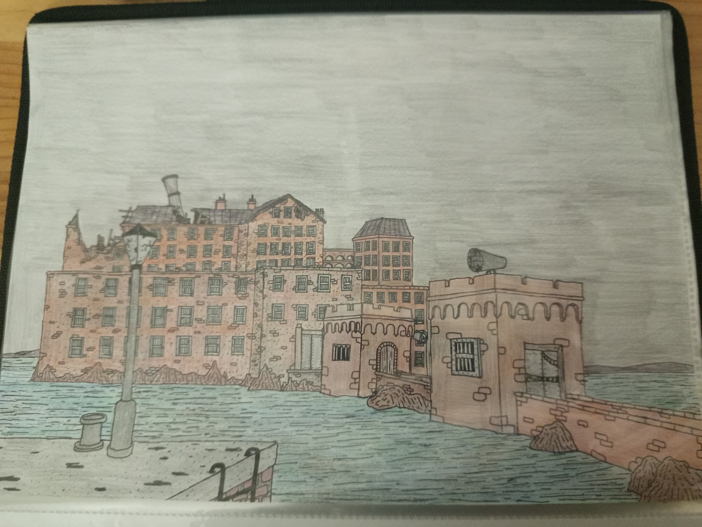
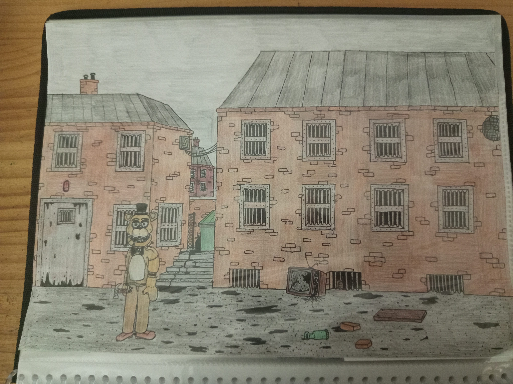

/ Author: Amelia Blackwood")
A.K.A The Industrial Castle
At first it was a place built for problematic kids. Those who were expelled and had nowhere to go got in here. Although, it was NOT actually a place to study and learn, it was actually a kids jailhouse or prison, they were forced to hard work every day. It was some kind of a factory to make pencils, rubbers, blackboards or any kind of school prop. The conditions were poor and they were constantly watched and psychologically abused.

During the "Blitz" in 1940 by German forces, the reformatory was occupied. During this time, while progressing in their holocaust, they were on a inmortality research, they wanted to find some kind of a vesel to preserve human life and consciousness. Back in 1945, a secret organization known as "The Blackwood Committee" fought against the nazis and occupied the complex. Doctor Bertrand Blackwood and its partner Doctor Elias Voss discovered this abandoned project, and unfortunately they wanted to continue the research, and made sure nobody ever finds out.

>In the process of modernization, Wormwood Island went on a complete change, most notably for the lighthouse, built in a gothic style and ending in a tall spire, it looked like an actual castle. During the building of the lighthouse someone stated that the structure wasn't completely safe, but the warning was ignored. As a result, in 2003 the spire collapsed, making the rest of the structure unsafe and completely evacuated. No one else has been here ever again.